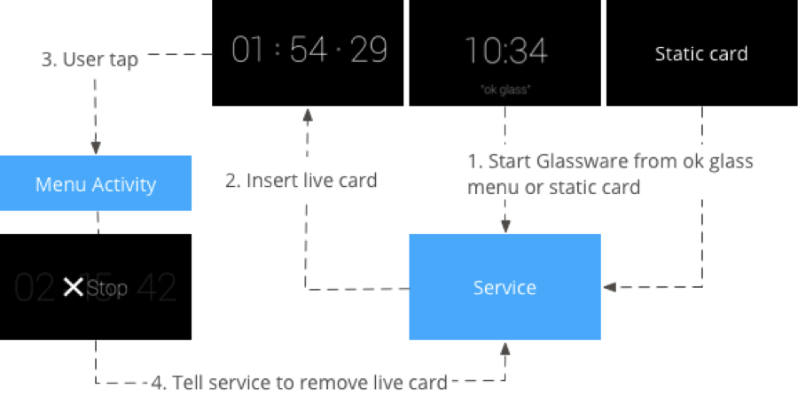

Despite consumer concerns regarding its privacy-intrusion capabilities and impact on societal norms, Google Glass is a very intriguing and curious device, one that may still be too advanced for our time. Yet, the Glass platform offers many avenues for user-centric innovation, bringing augmented reality closer to reality than ever before.
“OK, Glass. Google how are you designed to be user-centric?”
Both the software and hardware of Google Glass was designed to be human-centric: to not take the user away from life, but rather to supplement it. In its design principles, Google claims that, “Glass is fundamentally different than existing mobile platforms in both design and use.”
Because users tend to have multiple devices that stores and displays information for periods of time, Glass works best with information that is simple and time-relevant to increase user engagement and satisfaction. Google Glass sits above a user’s natural line of sight, allowing people to both experience the world and access the device for information relevant to their immediate environment.
Unlike other wearable technologies, Glass was created to be the most intimate of its kind. Therefore, unexpected functionality and disruptions in Glassware amplify the severity of the bad experience on Glass than on any other computing device.
Because Glass was designed to be close to the user’s senses, it meant to be there for the user when he or she needs to interact with the device and gets out of the way when it is not needed. For example, such an experience would involve Glass delivering a shopping list when the user arrives at a grocery store.
Because Glass was designed to enhance the daily life of its user, Google asserts that Glassware interface should be designed in line with natural human behavior - that is, to utilize “imagery, colloquial voice interactions, and natural gestures.” The ideal Glassware implements a “fire-and-forget model” that minimalizes unnecessary distractions, allowing the user to quickly start actions in Glass and then return to what they were doing prior to receiving a Glassware notification.
“OK, Glass. Google how do I design Glassware?”
Google provides common UX patterns to give users a consistent experience across all Glassware. Thee basic UI elements, when paired with invocation methods, can be used in combination to build a wide variety of usage cases.
- Static card display text, HTML, images, and videos that can invoke live cards or immersions.
- Live cards are rendered at a high frequency to display cards that are important at the current movement.
- Immersions display unique Android activities that take place outside of the timeline experience.

Google wanted voice commands to be an integral Glass experience, as it is intended to provide the user with the ability to do things hands-free, quickly, and naturally. Invocation methods include the universal “O.K., Glass” command that is used to activate the touch or voice menu.
Ironically enough, Google set up strict guidelines to make voice commands sound socially comfortable, highlighting that they should be colloquial and easy to say when used. In addition, the company places heavy emphasis on the human-centric quality of voice command design, asserting that they “should be based on what users want to do and not what Glassware is carrying out the action.” Good voice commands carry out actions as quickly as possible and should be general enough to apply to multiple Glassware.
Because Google seeks to maintain the style of Glass’ unique design paradigm, the company provides a standard card template, color pallete, typography, and writing guidelines, and encourages developers of Glassware to follow them as closely as possible. For example, the company heavily documents the layout and margin guidelines for different types of timeline cards for the Glass user interface. By doing so, Google champions for a fluid and consistent user experience across all Glassware applications.

It also provides patterns for user-Glass interactions, such as periodic notifications based on settings that the user defines, ongoing tasks on long-running live cards that users leave and come back to frequently, and immersions in the form of Android activities that momentarily take over the standard timeline experience. For example, the Stopwatch app that is shipped with the Glass Developer Kit starts the stopwatch with the iconic “O.K., Glass” command. By integrating recognizable visual cues with natural-sounding vocal commands while minimizing tactile control of Glass, Google has effectively demonstrated its sole focus on the user in showcasing the beginnings of its novel Google-level design for the future of wearable technology.

Up Next: "OK, Glass. Show me more!"